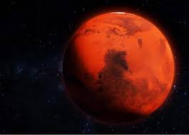

NASA MARTE SATURNO LUA

Marte é o quarto planeta a partir do Sol, o segundo menor do
Sistema Solar. Batizado em homenagem ao deus romano da guerra,
muitas vezes é descrito como o "Planeta Vermelho", porque o óxido de
ferro predominante em sua superfície lhe dá uma aparência
avermelhada.